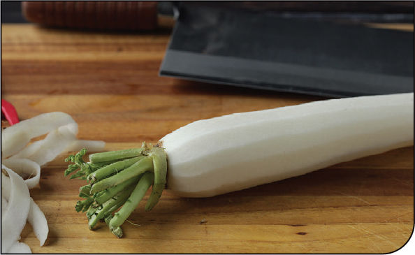
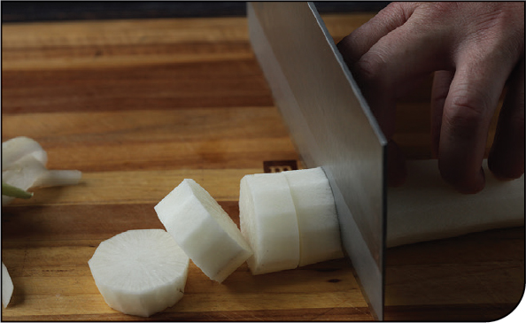
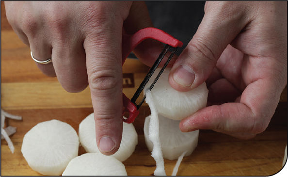

SIMMERED DAIKON RADISH (DAIKON NO NIMONO)
|
Yield Serves 4 |
Active Time 5 minutes Total Time 25 to 30 minutes |
Hondashi is powdered dashi that can be found at any Japanese market and most well-stocked supermarkets. The daikon for this recipe looks best when it is slightly beveled around its sharp corners. See here for step-by-step instructions on how to prepare daikon for braising. The daikon can be served as is, or you can add some other ingredients. Pick one or two of the suggested serving accompaniments to keep things simple.
INGREDIENTS
2 cups (480 ml) homemade dashi (here), or the equivalent in Hondashi (see Notes)
1 tablespoon (15 ml) light soy sauce
2 tablespoons (30 ml) sake
1 tablespoon (15 ml) mirin
1 teaspoon (4 g) sugar
1 daikon radish (about 1 pound/450 g), peeled, cut into 1½-inch slices, and beveled (see Notes)
To Serve (all optional; see Notes):
Small handful of leafy greens such as spinach, baby bok choy, or tatsoi, simmered with the daikon in the broth for the last few minutes
½ cup (70 g) frozen edamame added to the broth for the last minute of cooking to defrost
Finely julienned fresh ginger, thinly sliced scallions, or toasted sesame seeds scattered on top
A small dab of wasabi added to each piece
A small dollop of Sweet and Spicy Miso Dip (here) added to each piece
Daikon radish simmered in dashi with a touch of soy sauce, sake, mirin, and sugar is a classic Japanese preparation that is great hot, at room temperature, or straight out of the fridge. Daikon gets this really uniquely juicy-crunchy texture when simmered. It’s hard to describe, almost like biting into a crisp, dashi-filled water balloon. For a vegetable-based side dish, it packs a ton of flavor.
Some folks like to reduce the broth until it’s almost a glaze, giving the daikon a very intense savory-sweet flavor. I usually leave my broth a little lighter, which lets you serve the daikon in a bowl with plenty of broth (some leafy greens or edamame added to the simmering liquid right at the end is nice). The daikon is peeled and cut crosswise into disks, then the edges are lightly beveled (you can do this with a vegetable peeler or a knife). The technique, known as mentori in Japan, is about more than just appearance: beveling the edges protects the radishes from splitting or falling apart as they simmer gently in the broth. If you’ve ever built a table or dresser for a child, you’ll know that rounding the edges protects the child and the furniture. A similar technique is used for potatoes in nikujaga (beef and potato stew, here). Daikon cooks through in about 20 minutes at a simmer, but it can go for up to 45 without falling apart (assuming you’ve given it the mentori treatment). It’s hard to overcook the daikon, so there’s no big risk involved with experimenting in reducing the liquid as much or as little as you like.
If you plan on serving the daikon cold or have leftovers, I’d suggest transferring it to a zipper-lock bag and removing as much air as possible by sealing all but the last inch of the bag, squeezing out the air, and sealing it just before the liquid starts to come out. Place the bag on a flat plate or small rimmed tray (to catch any juices that might leak out) and store in the fridge for up to a few days. The broth will continue to add flavor to the daikon as it rests.
DIRECTIONS
1 Combine the dashi, soy sauce, sake, mirin, and sugar in a flat-bottomed wok or wide skillet or sauté pan. A dd the daikon pieces and arrange in a single layer (it’s OK if the daikon is not completely submerged).
2 Bring to a bare simmer, cover (for best results use an otoshibuta or parchment lid; see here), and cook, adjusting the heat to maintain a very gentle bubble and flipping the daikon pieces over carefully once every 10 to 15 minutes, until the daikon is completely tender and the liquid is reduced as much as you’d like it (depending on whether you simmer for 20 or up to 45 minutes, the broth will have more subtle or powerful flavor—taste and use your own judgment as to when to stop).
3 To Serve: Add any optional serving ingredients, transfer to a plate, and serve. Simmered daikon can also be stored in its broth in a sealed zipper-lock bag with the air squeezed out of it in the fridge for up to a few days. It’s excellent served cold.
Shopping for, Storing, and Preparing Daikon Radish
Daikon radish, known as mooli in parts of the United Kingdom (after its Hindi and Urdu name) is a large white root vegetable with a crisp, watery texture and a mild flavor that’s slightly peppery when raw and becomes very savory with a mild sulphury aroma* when pickled or cooked. It’s a hugely important vegetable in Japanese cuisine, where it is grated fresh and stirred into dipping sauces for noodles or tempura, simmered in broth, added to soups and stews, or pickled and used as a topping for rice.
When shopping for it, look for daikon with smooth, firm skin, bright, fresh-looking greens (if they are still attached), and a straight, cylindrical body (which makes it easier to cook with). Daikon can be stored in a bag in your crisper drawer for a week or longer. Daikon that has started to turn a little limp can’t be used for grating, but it still works just fine for pickling or simmering.
One of the problems with simmering daikon is that it tends to break around sharp corners, which can cause bits of the vegetable to fall into and cloud the broth, making for a less-than-ideal presentation. To solve this issue, Japanese cooks use a technique called mentori, in which the edges of a vegetable are chamfered or beveled to ease sharp angles. The technique is similar to the French technique of chamfering potatoes for pommes de terre fondantes and indeed works well for stewed potatoes, such as in nikujaga (here)
KNIFE SKILLS
Step 1 • Peel the Daikon

Use a vegetable peeler to remove the skin from the daikon.
Step 2 • Cut the Daikon

Cut the daikon into 1½-inch disks.
Step 3 • Bevel the Edges

Use a sharp knife or a vegetable peeler to make an ⅛-inch bevel around the edges of the sliced daikon. The finished daikon should have a chamfered, lozenge-like shape.
*Let’s just say it: Daikon radish smells kinda like farts. But in a good way, like cute baby farts.